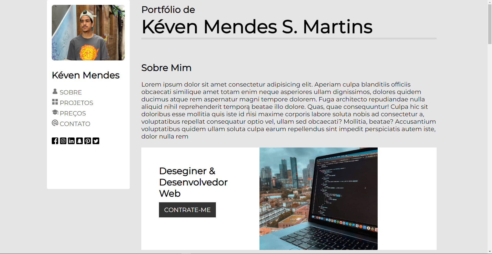
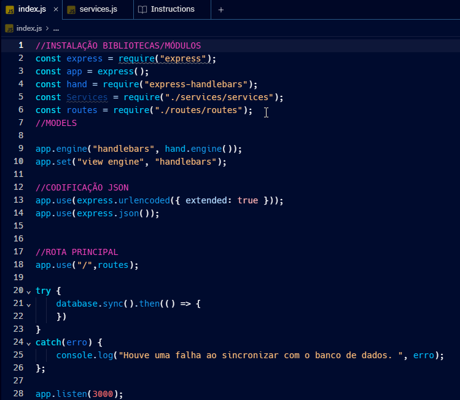

Projetos mais relevantesAbaixo irei apresentar alguns dos meus trabalhos mais importantes e relevantes até aqui. |
|  |
Portfólio ProfissionalComo forma de práticar um bom back-end no curso Reprograme-se oferecido pelo IFES, tivemos diversas tarefas com o intuito de criar um portfólio. Todos os trabalhos estão no Github. |
|  |
Banco de dadosAprendemos também a como criar API's e banco de dados sql atraves do Nodejs. Todos os trabalhos também prensentes no Github |